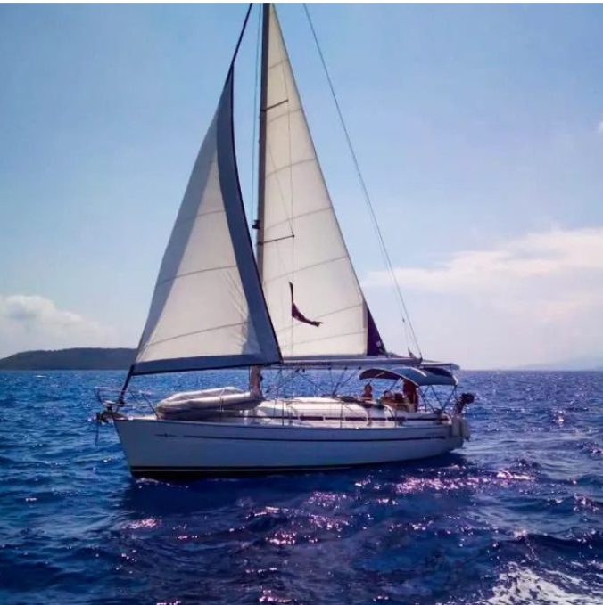
Monohull2 Cabins · 2007
Bavaria 33 Cruiser
Couples & small families
6 guests6 berths1 head
View yacht
Bareboat & Skippered Charters
Fourteen yachts, from a nimble two-cabin cruiser to a flybridge catamaran that sleeps twelve. Every one maintained by the people who charter it.
The boats
Monohulls for sailors who want to sail, catamarans for crews who want space and a level floor. Filter by size, or tell us your numbers and we will do the choosing.

Monohull2 Cabins · 2007
Couples & small families
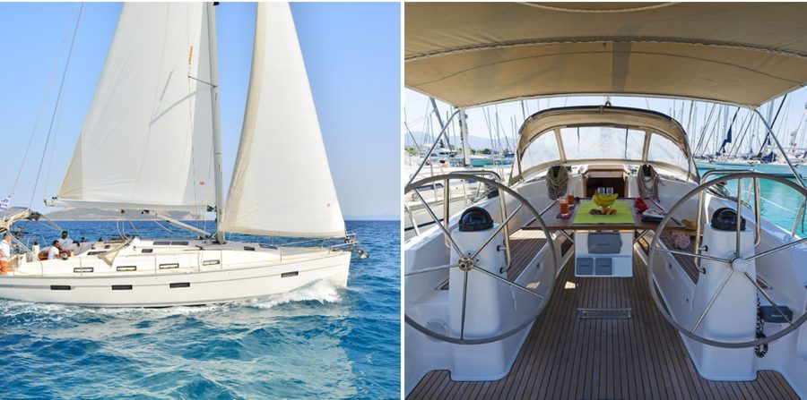
Monohull3 Cabins · 2011
The all-rounder
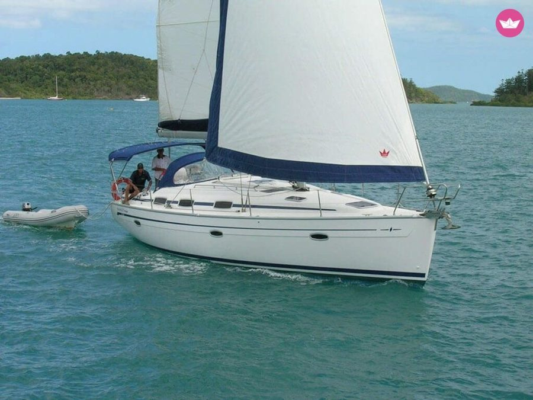
Monohull3 Cabins · 2007
Easy miles
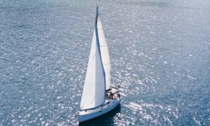
Monohull3 Cabins · 2007
For the helmsman
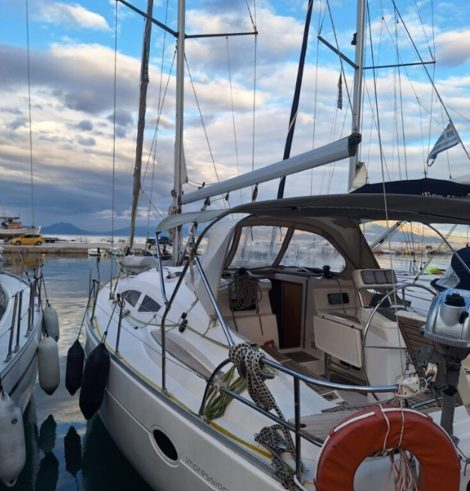
Monohull3 Cabins · 2009
Performance cruiser
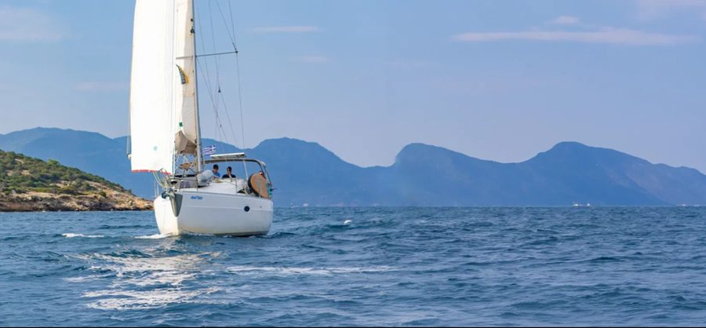
Monohull3 Cabins · 2006
Nimble & shallow
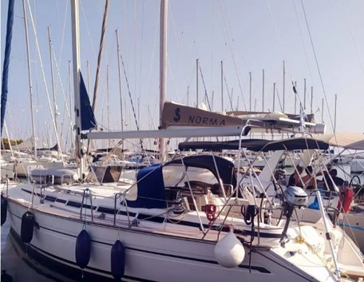
Monohull4 Cabins · 2000
Four cabins, honest value
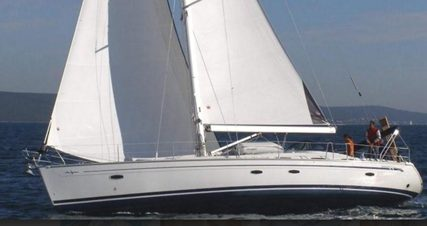
Monohull4 Cabins · 2010
Volume for ten
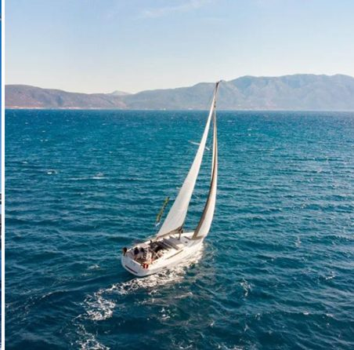
Monohull4 Cabins · 2014
Four en-suites
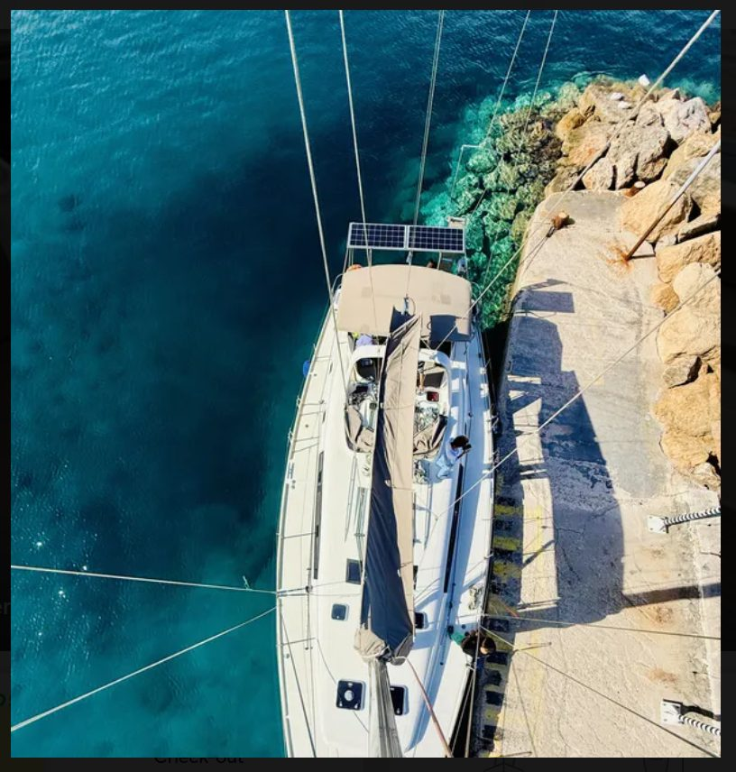
Monohull5 Cabins · 2010
Big groups
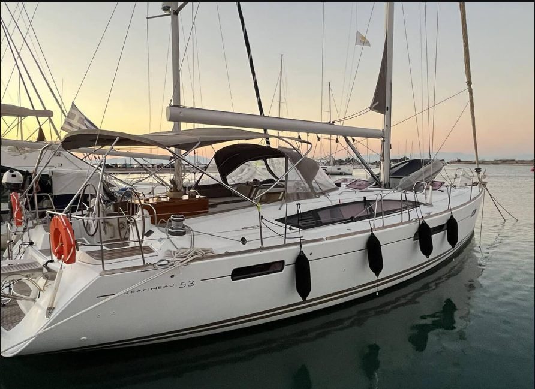
Monohull5 Cabins · 2011
Flagship monohull
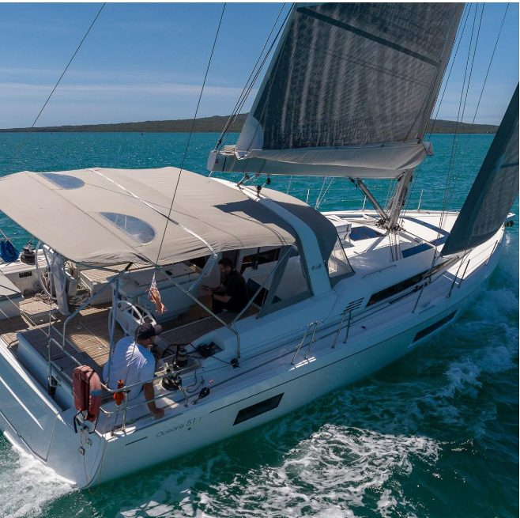
Monohull5 Cabins · 2018
Newest monohull
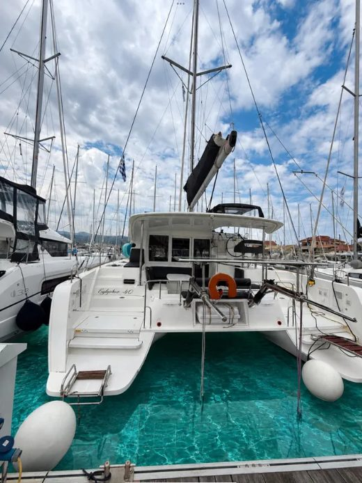
CatamaranCatamaran · 2022
Newest yacht in the fleet
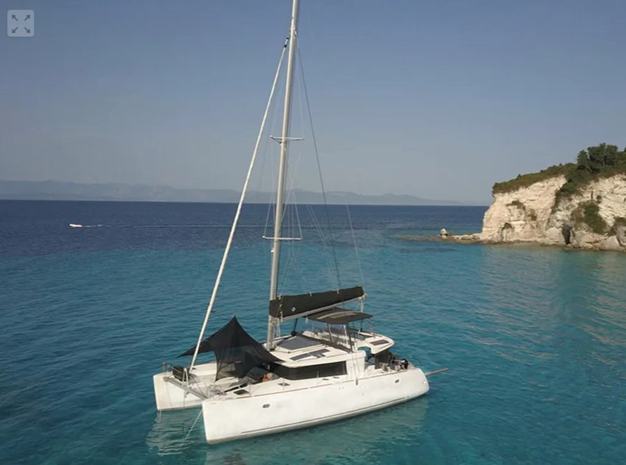
CatamaranCatamaran · 2019
Flybridge catamaran
How chartering works
Dates, crew size, experience level and whether you want to sail hard or swim a lot. We answer with the yachts that genuinely fit — not the one we most want to fill.
Bareboat if you hold a recognised licence and a competent second. Skippered if you would rather learn, relax, or hand the responsibility to someone who knows every bay.
Provisioning, transfers, a hostess, a route worth following. We agree it all before you fly, so the first day is spent swimming rather than shopping.
A proper handover at the base, a briefing pitched at your experience, and a number that a real person answers for the whole week you are away.
Availability
Send the dates and the number of guests. We will come back with the yachts still available, the difference between them, and what each one costs.